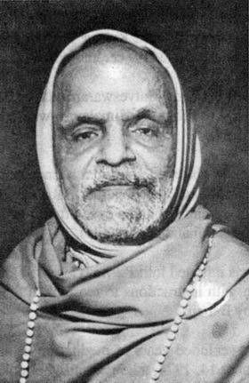

Publications
His Books
Available via WhatsApp Catalog from Swasti Prakashan Sansthan


जगद्गुरु भारती कृष्ण तीर्थजी महाराज
Mathematician, Sanskrit scholar, saint, and the discoverer of the 16 Sutras of Vedic Mathematics — one of the greatest intellects of the 20th century.

Born as Venkataraman Shastri on March 14, 1884, in Tirunelveli, Tamil Nadu, he was an exceptionally gifted child. He passed the matriculation exam from the Madras University at the age of just sixteen, topping the entire Bombay Presidency in Sanskrit.
He earned his B.A. degree in six subjects simultaneously — Mathematics, English, Sanskrit, History, Philosophy, and Science — creating a record that stood for decades. He received his M.A. in American Science from the American College of Sciences, Rochester, New York.
In 1911, he met Shankaracharya Trivikram Tirthaji of Sringeri Math and was deeply influenced. In 1919, he was initiated into the monastic order and received the name Swami Bharati Krishna Tirtha.
"The human mind is an inexhaustible treasure of intelligence and power — Vedic Mathematics unlocks this treasury."
— Jagadguru Bharati Krishna Tirthaji Maharaj
Appointed the head of Govardhan Math, Puri in 1925
Appointed as the 143rd Jagadguru Shankaracharya of Govardhan Math, Puri Peetham, in 1925. He served the Peetham with extraordinary devotion for over three decades.
As Jagadguru, he travelled across India and the world, delivering discourses on Vedanta, Sanskrit, and Vedic Mathematics. He visited the USA, UK, and Europe, spreading ancient Indian wisdom.
He attained Mahasamadhi on February 2, 1960, at Nagpur. His legacy — particularly the 16 Sutras of Vedic Mathematics — continues to inspire millions worldwide.
Rediscovered from the Atharva-Veda appendix through years of contemplative research
During a period of intense meditation and Vedic study between 1911 and 1918 at Sringeri, Bharati Krishna Tirthaji Maharaj rediscovered 16 mathematical formulae (Sutras) and 13 sub-formulae (Upa-Sutras) from the Parishishta (appendix) of the Atharva-Veda.
These sutras cover all branches of mathematics — from simple arithmetic to advanced calculus — and allow calculations to be done mentally with extraordinary speed. The famous sutra "Ekadhikena Purvena" (by one more than the previous one) allows the squaring of numbers ending in 5 to be done instantly.
He compiled these discoveries into his seminal work "Vedic Mathematics", published posthumously in 1965 by BHU Press. The book has since been translated into several languages and is studied in schools worldwide.
Explore Vedic Mathematics →Passed matriculation at 16, topped Bombay Presidency in Sanskrit. Earned BA in 6 subjects simultaneously. Received MA from American College of Sciences, New York.
In 1958, toured USA and UK demonstrating Vedic Math to mathematicians at Caltech, MIT, and Cambridge. Wowed Western scholars with mental calculation feats.
Authored over 130 works on mathematics, Vedanta, philosophy, science, and Sanskrit. His Vedic Mathematics book became a global bestseller, still in print today.
Revitalized Govardhan Math, Puri — restored its buildings, Sanskrit library, and traditions. Established the foundation for the thriving Peetham of today.
Presented "zero" as a conceptual digit and wrote "Swastik Ganit" — one of 11 mathematics books exploring the philosophical depth of numbers in Vedic tradition.
Combined extraordinary mathematical genius with deep spiritual attainment. Described his discoveries as revelations received during years of silent meditation on the Vedas.
Available via WhatsApp Catalog from Swasti Prakashan Sansthan